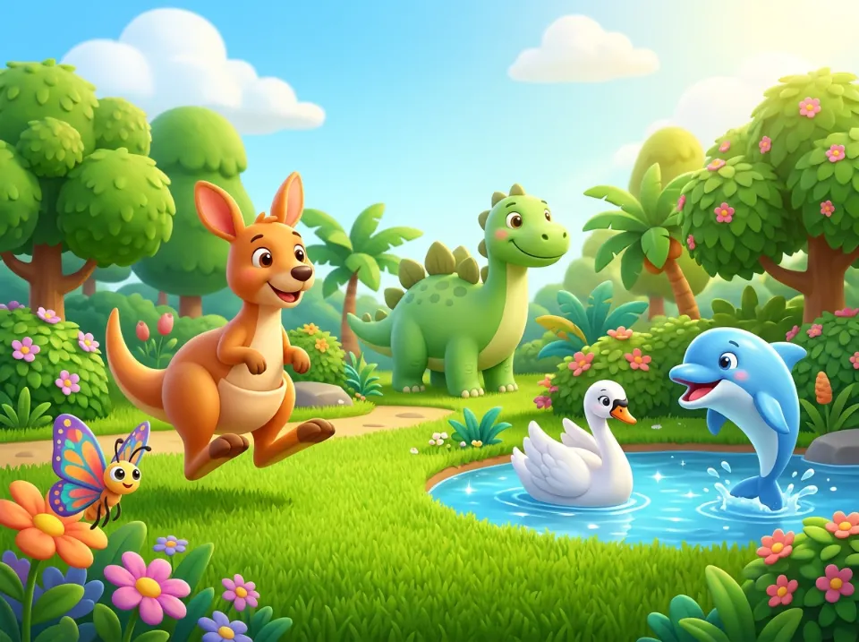
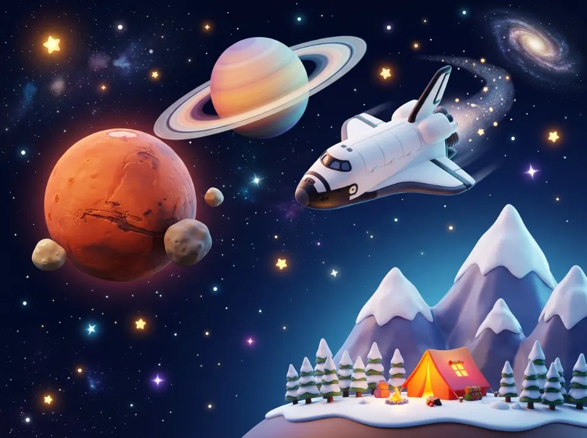

Chinh phục 15 Khiên Cambridge Flyers ngay trên TV
Hệ thống hóa toàn bộ 56 Units bài học, 98 buổi lộ trình, từ vựng kèm phát âm IPA, bài luyện Speaking 2 chiều, Reading & Writing và Listening tô màu tương tác từ thư mục Google Drive của gia đình. Hỗ trợ điều khiển từ xa (Magic Remote / phím mũi tên & phím số 1–5).
Chế độ Gia đình & Smart TV
Bấm vào bất kỳ từ/câu nào để TV phát âm chuẩn Cambridge
Units 1 – 18: Nền tảng Từ vựng & Câu phức
Hiện tại đơn/tiếp diễn, quá khứ đơn, mệnh đề quan hệ who/when, so sánh nhất, giới từ vị trí, trạng từ tần suất. Nghe đạt ~40% (10–11/25 câu), Đọc viết ~30% (15–17/50 câu), Nói tìm 3–5 điểm khác biệt & kể chuyện 4 tranh bằng 5–7 câu.
Units 19 – 34: Mở rộng Ngữ cảnh & Phản xạ
Danh động từ (V-ing), tương lai gần be going to, quá khứ tiếp diễn, hiện tại hoàn thành, trạng từ Adj+ly, chủ đề Giao thông, Thời tiết, Bệnh viện. Nghe đạt ~70% (17/25 câu), Đọc viết ~65–70% (32–35/50 câu), Nói so sánh 7–9 cấu trúc.
Units 35 – 56 & Flyers 5, 6, 7 Practice Tests
Cấu trúc be made of, Hiện tại hoàn thành (ever, already, yet, just), will/might, too/enough, make/do, chỉ đường. Nghe đạt ~95% (22–24/25 câu), Đọc viết ~95% (46–48/50 câu), kể chuyện 4 tranh 9–10 câu đơn & ghép.
Bảng Điều Khiển 56 Units — Fun for Flyers (Fourth Edition)
Trích xuất nguyên bản từ file DETAILED SCHEDULE - FUN FOR FLYERS (1).xlsx. Bấm vào từng Unit để học từ vựng, ngữ pháp & nghe phát âm trên TV.

Flashcards Từ Vựng Có Phiên Âm IPA & Phát Âm Chuẩn
Trích xuất từ FFF - UNIT 5 - ABOUT ANIMALS.pptx và chuỗi bài giảng WRITING 1–14. Bấm vào thẻ để nghe đọc & xem câu ví dụ.
kangaroo
/ˌkæŋɡəˈruː/ • (n)
chuột túi (Kangaroo)
Câu ví dụ & Định nghĩa Flyers:
"A kangaroo is a large Australian animal that moves by jumping on its strong back legs."
🦇 Bats or 🐬 Dolphins? — Đọc câu & Chọn đúng con vật
Trong bài giảng FFF - UNIT 5 - ABOUT ANIMALS.pptx, mỗi câu dưới đây miêu tả Dơi (Bats = B) hoặc Cá heo (Dolphins = D). Hãy bấm chọn đáp án đúng!
🏃 How Do They Move? — Phân loại cách di chuyển
Chọn động từ chỉ cách di chuyển chính xác (Run, Fly, Jump/Hop, Swim) cho từng loài vật trong bài học Unit 5:
Reading & Writing Part 1: Look and Read — Choose the Correct Words

Hoàn Thành Câu Chuyện & Luyện Đọc Trên TV (11 Stories)
Chọn bài đọc, điền từ còn thiếu vào chỗ trống và bấm nghe TV đọc mẫu toàn bộ câu chuyện.
Check the Mistake & Correct It — Thử Thách Sửa Lỗi Ngữ Pháp
Tìm lỗi sai trong câu và chọn phương án sửa đúng theo chuẩn ngữ pháp Cambridge Flyers.
Speaking Part 2: Information Exchange & Free Talk
Bố mẹ và bé cùng nhìn lên màn hình TV để luyện đóng vai Giám khảo – Thí sinh hỏi và trả lời 5 câu hỏi lấy thông tin.
Speaking Part 3: Tell the Story — Luyện Kể Chuyện Theo Câu Hỏi Gợi Ý
Đọc bối cảnh mở đầu, trả lời từng câu hỏi gợi ý để ghép thành câu chuyện hoàn chỉnh (5–10 câu), sau đó bấm Xem & Nghe Đáp Án Mẫu.
Listening Part 5 & Part 2: Listen, Colour and Write trên TV
Bấm "Phát bài nghe (TTS)" để nghe hướng dẫn tiếng Anh, sau đó chọn màu sắc trên bảng màu và bấm vào đúng đồ vật trên màn hình để tô màu!
Kho Học Liệu Gốc: FUN FOR FLYERS
Fun for Flyers SB 4e.pdf
Sách Học Sinh (Student's Book Fourth Edition - 22.1 MB)
Fun for Flyers TB 4e.pdf
Sách Giáo Viên & Đáp Án (Teacher's Book 4e - 60.3 MB)
DETAILED SCHEDULE - FUN FOR FLYERS.xlsx
Lộ trình chi tiết 98 buổi, 56 Units & tiêu chuẩn đầu ra 15 Khiên
Fun for Flyers CD 4e (Audio MP3)
Trọn bộ file nghe MP3 CD1 & CD2 Cambridge University Press
BỘ Bài giảng Fun For Flyers (56 Units)
Bao gồm thư mục 1. Fun For Flyers (Slide + Giáo án) & 2. Homework
Bài giảng PPT Luyện 4 Skills
4 thư mục chuyên sâu: LISTENING, SPEAKING, READING, WRITING
Bộ Test 4 Skills (KHO ĐỀ 1 & KHO ĐỀ 2)
Ngân hàng đề kiểm tra định kỳ và đề thi thử Flyers kèm đáp án (KEY)
Cách Mở & Điều Khiển Trên Màn Hình TV
1. Điều khiển bằng LG Magic Remote / Điều khiển TV:
• Dùng con trỏ chuột bay (Magic Remote) để bấm trực tiếp vào bất kỳ thẻ từ vựng, câu hỏi hoặc nút loa nào trên màn hình 86 inch.
• Hoặc dùng 4 phím mũi tên (Lên/Xuống/Trái/Phải) để di chuyển khung viền vàng giữa các nút và nhấn OK / Enter để chọn.
2. Phím tắt nhanh trên Remote / Bàn phím không dây:
- • Phím số 1 – 5: Chuyển nhanh giữa 5 phân khu học tập.
- • Phím Space (Cách): Phát âm lại từ vựng đang mở trên Flashcard.
- • Nút "Chữ TV: Cỡ Lớn 4K" trên thanh công cụ: Phóng to toàn bộ cỡ chữ thêm 15% để nhìn rõ từ sofa cách 3–4m.
3. Cách đưa trang web lên trình duyệt Web của TV LG:
• Cách 1 (Nhanh nhất): Mở file HTML này trên máy tính/điện thoại rồi chiếu màn hình (AirPlay / Screen Share) lên TV LG, hoặc mở trực tiếp qua liên kết Gemini trên trình duyệt webOS.
• Cách 2 (Chạy mạng nội bộ LAN tại nhà): Lưu file fun_for_flyers_tv.html vào máy tính cùng mạng Wi-Fi Mesh, chạy lệnh python -m http.server 8080 rồi mở trình duyệt TV LG truy cập địa chỉ IP máy tính.